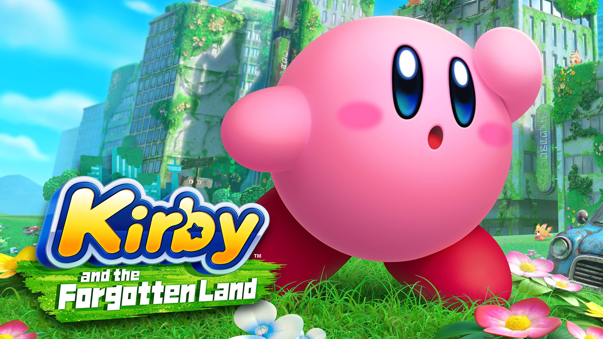

Bienvenido a Kirby's Dream Web
Esta plataforma es una enciclopedia interactiva dedicada al universo de Kirby. Nuestro objetivo es ofrecer a los fans un espacio centralizado donde explorar los secretos del héroe rosado de Dream Land. En este sitio podrás descubrir:
- ✨ Copia y Combate: Un análisis detallado de las habilidades icónicas, desde el clásico Rayo hasta el dinámico Yoyó.
- 🤝 Círculo de Amigos: Información sobre los aliados inseparables como Bandana Dee y los eternos rivales como el Rey Dedede o Meta Knight.
- 🎨 Experiencia Visual: Un diseño inspirado en la estética vibrante y mágica de los juegos de HAL Laboratory.
Navega a través de nuestras secciones para convertirte en un experto de la saga. ¡La aventura acaba de empezar!
La Historia del Héroe Rosado
Kirby nació en 1992 de la mano de Masahiro Sakurai en el juego Kirby's Dream Land para Game Boy. Originalmente, su diseño circular era solo un "placeholder" o marcador de posición temporal, pero el equipo se encariñó tanto con su sencillez que decidieron mantenerlo como el protagonista definitivo.
Habitante de Dream Land en el planeta Popstar, Kirby es conocido por su capacidad de absorber enemigos para copiar sus habilidades. A lo largo de más de 30 años, ha pasado de ser un joven glotón que salvaba la comida de su pueblo a un guerrero cósmico capaz de derrotar entidades que amenazan el universo entero.
Últimas Noticias: Kirby y el Mundo Olvidado

El último gran hito de la franquicia es Kirby y el Mundo Olvidado (Kirby and the Forgotten Land), la primera aventura de la serie en entornos 3D completos.
- 🌟 Modo Transmorfosis: ¡Kirby ahora puede inhalar objetos grandes como coches o máquinas expendedoras!
- 🎮 Éxito de ventas: Se ha convertido en el juego más vendido de la historia de la franquicia.
- ⚔️ Evolución de habilidades: Por primera vez, puedes mejorar tus habilidades de copia en la armería de la Ciudad de los Waddle Dees.
Habilidad Del Dia
Yo-yo
introducido en kirby super star, esta habilidad permite realizar ataques rapidos y de larga distancia empleando un Yo-yo